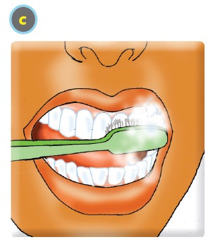
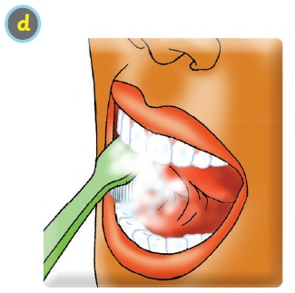

Ninazifahamu hatua za kusafisha kinywa changu.
Paka wa katuni akionyesha kwa ishara huku akielekeza kufuata hatua za kusafisha kinywa.

Ninasafisha kinywa changu kwa kufuata hatua hizi.
1
Ninaweka dawa ya meno kwenye mswaki.
2


Ninasugua meno pande zote.